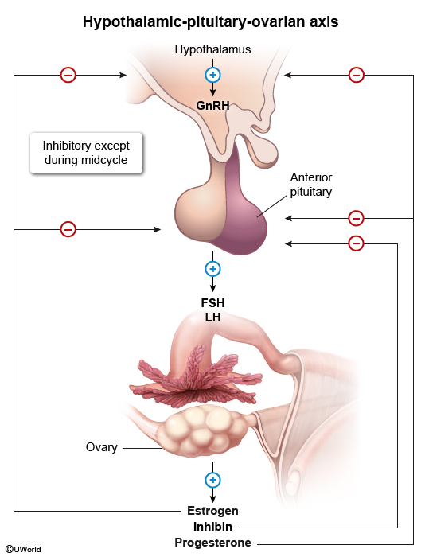
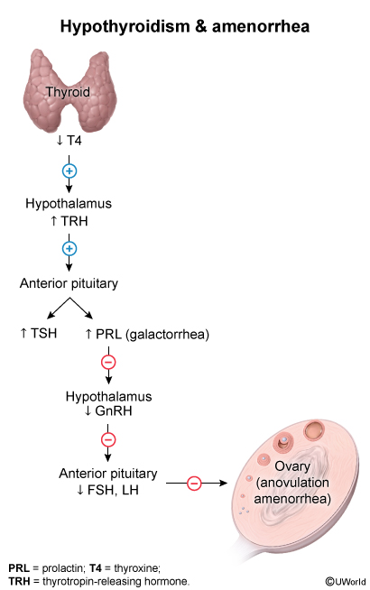
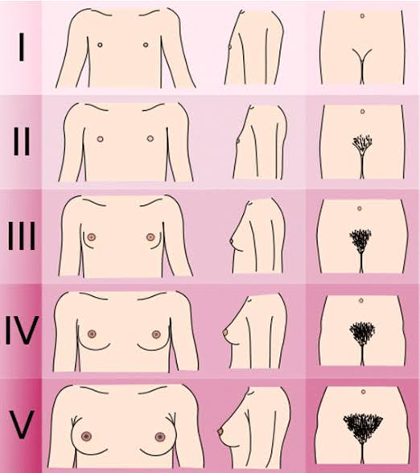

PRIMARY AMENORRHEA
Definition
Two types of amenorrhea: Primary and Secondary
Primary Amenorrhea
- Age 13 without breast development and has not had first period.
- Or age 15 with normal puberty changes (growth, breast development) and no period.
Secondary Amenorrhea
- No period > 3 months in a lady with previously regular periods.
- No period > 6 months in a lady with previously irregular periods.
Framework: Upper vs Lower Causes


- Understand the hormonal cycle:
- Hypothalamus & Pituitary start process → need LH & FSH.
- Thyroid must function properly.
- Ovaries produce estrogen, progesterone, in response to LH/FSH.
- Hypothalamus & Pituitary start process → need LH & FSH.
- Any problem anywhere can cause amenorrhea.
- Categories:
- Upper problems: hypothalamus, pituitary, thyroid.
- Lower problems: ovaries.
- Upper problems: hypothalamus, pituitary, thyroid.
Hormonal Patterns
- Amenorrhea = hypogonadism.
Two types:
- Hypogonadotropic
- Upper area not functioning.
- Low LH and FSH.
- Hypothalamus/pituitary problems.
- Upper area not functioning.
- Hypergonadotropic
- Ovarian problem.
- High LH and FSH.
- Low estrogen, progesterone, testosterone.
- Ovarian problem.
Primary Amenorrhea – Differential Diagnosis
Hypothalamus (Suppression causes) (hypogonadotropic)
- Stress
- Excessive exercise
- Eating disorders
- Significant weight loss
Pituitary (hypogonadotropic)
- Hypopituitarism
- Prolactinoma
Thyroid
- Thyroid disorders
Ovaries (hypergonadotropic)
- Genetic problems (e.g., Turner syndrome)
- PCOS (normoginadotropic)
- POF (Premature Ovarian Failure) – rare but possible
- Ovarian dysgenesi
Uterus (anatomical) (normoginadotropic)
Structural problems:
- Müllerian agenesis (no uterus)
- Imperforate hymen
- Müllerian agenesis (no uterus)
Diagnosis of Exclusion but very common
- Constitutional delay (hypogonadotropic)
- Normal variant
- Usually family history
- Normal variant
Therapeutic Guidelines – Primary Amenorrhea
History & Examination
- Review medications:
- Anti-estrogen meds
- Steroids
- Pills if taking
- Anti-estrogen meds
- Physical exam:
- Tanner staging (breast development, pubic hair growth)
- Vaginal exam if appropriate (look for perforated hymen) not if virgin
- Lower abdominal exam
- Tanner staging (breast development, pubic hair growth)
Investigations
Pregnancy test
Serum FSH, LH, estradiol, TSH, prolactin
Pelvic USG
- Rule out pregnancy if possible.
- Elevated prolactin → prolactinoma.
- Abnormal TSH → thyroid disorder.
- No uterus/vagina → anatomical problem → specialist.
- Uterus/vagina present → check FSH & LH:
FSH/LH Interpretation
- Low = hypogonadotropic (hypothalamus/pituitary)
- High = hypergonadotropic (ovarian)
- Normal = constitutional delay, chronic illness, imperforate hymen, PCOS, congenital adrenal hyperplasia, etc.
Key Examination Point
- Tanner staging (Stages 1–5; stage 5 = full breast development and pubic hair)

Secondary Amenorrhea
Definition
- Lady previously having periods, now no periods for 3–6 months.
Most Important Differential
- Pregnancy
Most Common Causes – Secondary Amenorrhea
- Pregnancy
- Perimenopause - in females aged 45 and older
- PCOS
- HypoG: Hypothalamic, Pit. Tumors and prolactinoma, Hypopit
- HyperG: POF
- Intrauterine adhesions AKA Asherman Sx
- Thyroid disorders
- Medications that suppress pit and hypothal: Opioids, steroids, OCPs, Depo medroxy prog
- Medication causing Hyperprolactinoma: Antipsychotic, metoclopramide, verapamil, SSRI, TCA.
Removed from list
- Turner syndrome
- Müllerian agenesis / structural problems (because she has had periods before)
Big Addition
Pregnancy
Therapeutic Guidelines – Secondary Amenorrhea
History & Examination
- Rule out pregnancy first.
Investigations
- FSH, LH
- TSH
- Estrogen, progesterone
- Prolactin
- Androgen studies (testosterone) – for PCOS
- Pelvic ultrasound (uterus structure, ovaries, cysts)
Interpretation
- Pregnancy test positive → pregnancy
- Abnormal TSH → thyroid disorder
- Elevated prolactin → MRI for prolactinoma
- Low LH/FSH → upper problem
- High LH/FSH → ovarian problem
- Normal LH/FSH → chronic illness, PCOS, adhesions, etc.
PCOS Reminder
- Diagnosis of exclusion.
- Need 2 out of 3: Rotterdam criteria
- Menstrual disturbances (amenorrhea/oligomenorrhea)
- Clinical/biochemical hyperandrogenism:
- High testosterone (biochemical)
- Acne/hair growth (clinical)
- High testosterone (biochemical)
- Ultrasound: >15–20 cysts on each ovary
- Menstrual disturbances (amenorrhea/oligomenorrhea)
- Subfertility, obesity, insulin resistance are not main criteria.
INTRO: 5Ps HISTORY
- Period
- Partner
- Pills
- Pregnancy
- Pap smear / Cervical screening
Three groups
- Mid-aged lady (20–45) – 5Ps stay the same.
- Very young lady
- Ask:
- Have you started having your periods?
- Puberty signs:
- Breast enlargement
- Hair growth (armpits/private parts)
- Breast enlargement
- Have you started having your periods?
- Partner history same
- Pills history can be asked (rare)
- Pregnancy history not expected
- Pap smear not applicable
- Ask about Gardasil vaccination
- Ask:
- Menopausal lady
- Period history:
- When was last period?
- Menopausal symptoms (main: hot flushes)
- When was last period?
- Partner history:
- Sexually active
- Dyspareunia (imp)
- Post-coital bleeding (imp)
- Sexually active
- Pills replaced with:
- Have you used HRT?
- Have you used HRT?
- Pregnancy history same
- Cervical screening + mammogram
- Period history:
CASE 1
Your next patient is a 17 year old girl who is brought to your general practice by her mother, concerned that has not had her periods.
Task:
- Take history from the mother for 6 minutes
- Physical Examination will appear on the screen
- Explain your diagnosis and differentials to the mother
HISTORY TAKING STRUCTURE
1. OPEN-ENDED QUESTION
- Start with proper open question to get opening statement.
- Patient may say she has never had a period and is worried at age 17.
2. EMPATHIC STATEMENT
- Acknowledge concern “I am so sorry to hear that”
- Reassure:
- “I’ll ask a few questions, I’ll examine you, I will try to find the cause and make the best management plan for you.”
- “I’ll ask a few questions, I’ll examine you, I will try to find the cause and make the best management plan for you.”
3. EXPLORE THE COMPLAINT (also P1)
Key focus: Periods and Puberty
- Have you ever had your periods?
- Defines primary vs secondary amenorrhea
- Defines primary vs secondary amenorrhea
Puberty questions (key point questions)
- Have you noticed any breast enlargement?
- Have you noticed any hair growth in armpits/private areas?
- Have you had sudden increase in height and weight?(growth spurt)
- If puberty present → hormonal changes happening
- No puberty + no periods → think major problem/genetic syndrome
4. 5Ps IN A YOUNG LADY
P1: Periods
- Already covered
P2: Partner
On average in Australia girls start sexual activity at 14 y/o, so should consider this
- Ask sensitively:
- “I am going to ask few sensitive questions, Is that okay with you?”
- Are you sexually active? Proceed to next question even if answer is no.
- Have you ever been sexually active?
- Have you been sexually active lately?
- “I am going to ask few sensitive questions, Is that okay with you?”
P3: Pills
- Have you used any contraception pills?
P4: Pregnancy
- Replace with:
- Have you had any surgeries down below?
- Have you had any surgeries down below?
P5: Pap smear
- Not applicable at 17
- Ask:
- Have you received your Gardasil vaccination?
- Have you received your Gardasil vaccination?
5. DIFFERENTIALS – UPPER TO LOWER APPROACH
UPPER PROBLEMS
Hypothalamus
- Stress – mini HEADS
- Home situation – any stressors?
- School – stressors/bullying
- Home situation – any stressors?
- Exercise
- Do you exercise?
- How much? (>1 hour/day = too much)
- Do you exercise?
- Diet
- Tell me about your diet
- Any weight changes?
- Have you used laxatives/medications/crash dieting to loose weight?
- Tell me about your diet
Prolactinoma
- Headache?
- Vision problems/blurring?
- Nipple discharge (milky)?
Thyroid
- Weather preference?
- Heat/cold intolerance?
- Constipation/diarrhea (optional second question)
LOWER PROBLEMS
Premature ovarian failure
- Symptom similar to menopause:
- Hot flushes
- Hot flushes
Polycystic ovarian syndrome
- Have u had Acne
- Any Excessive hair growth on face/body
- Any Recent weight gain
Structural problems
- Imperforated hymen
- Do u get Recurrent monthly episodes of abdominal pain (period pain but bleeding not coming out)
- Do u get Recurrent monthly episodes of abdominal pain (period pain but bleeding not coming out)
FAMILY HISTORY
- Any family history of genetic problems?
- When did mother/sisters get first period? (late periods)
MEDICATIONS / PAST MEDICAL HISTORY
- Are you using any medications?
- Do you have any past medical history?
PASSING THE CASE
- Must rule out differentials
- Show understanding of differential list
HISTORY FINDINGS
OLD
- Excessive exercise
NEW
- No periods
- Breast enlargement at age 11
- Hair growth present
- Virgin, not sexually active
- No abdominal pain
- No excessive exercise/dieting/weight loss
PHYSICAL EXAMINATIONS
- Tanner stage 5
- No imperforated hymen
- Cannot do bimanual/speculum exam (critical error coz she is virgin)
Top diagnosis: primary amenorrhea due to Constitutional delay
- Diagnosis of exclusion
EXPLAINING TO MOTHER
- Primary amenorrhea
- Which Means she has missed/not had her first period
- First period is delayed
- Which Means she has missed/not had her first period
- There can be Many causes for this
- Most likely cause is Constitutional delay
which is Normal variant- And means that Periods starting later than expected
- And means that Periods starting later than expected
- But we will need to do further investigations
- To rule out other causes: (tell other causes NOT investigations)
- It can be problem in Hypothalamus (stress, chronic illness, eating disorders, weight changes)
- It can be Pituitary (hyperpituitarism, prolactinoma)
- Thyroid disorders
- Ovaries (premature ovarian failure, polycystic ovarian syndrome)
- Structural (malaria agenesis, imperforated hymen)
- Medications
- Chronic illnesses
- Rarely pregnancy
- It can be problem in Hypothalamus (stress, chronic illness, eating disorders, weight changes)
- To rule out other causes: (tell other causes NOT investigations)
INVESTIGATIONS (ONLY IF TASKED)
- Ultrasound (uterus and ovaries)
- β-HCG if sexually active
- Hormonal studies:
- FSH
- LH
- TSH
- Prolactin
- Androgen studies/testosterone
- Estrogen and progesterone
- FSH